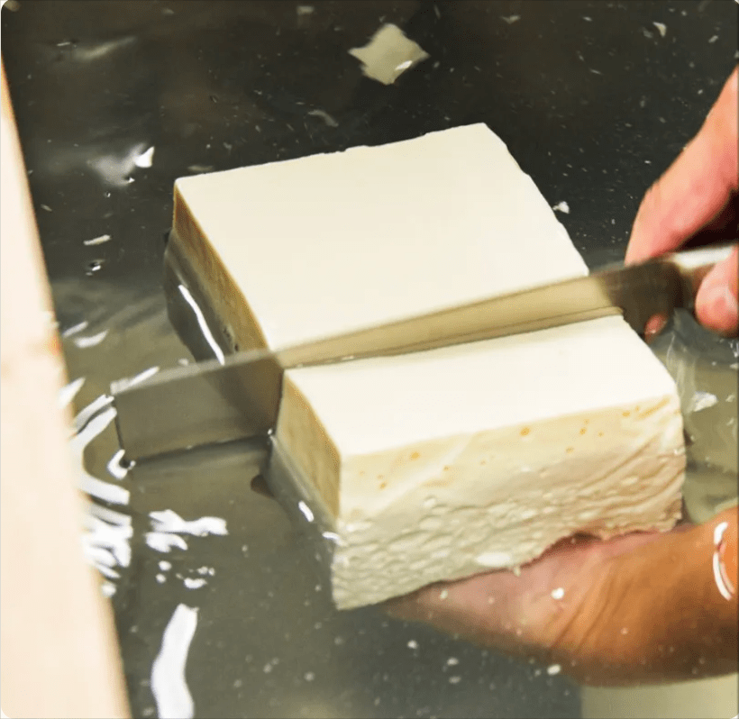

A treasure of Japan,
shared without exception.

We want to bring the very best of Japan to the world. With that passion, we created our Tofu Burger — a modern expression of one of Japan's most quietly admired ingredients.
Tofu requires pure, high-quality water. Japan's climate and natural springs make it ideal for tofu-making, and our delicate techniques have been passed down through generations. Japanese tofu has become a product admired worldwide — a true reflection of artisan culture.
Beyond differences in nationality, religion, and diet — everyone deserves the true taste of Japan.
That is why we want every guest — vegan, halal, gluten-free — to enjoy this masterpiece. Bringing the true taste of Japan to the world. This is our story.